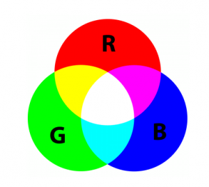

RGB
Welkom op de pagina RGB!

RGB-kleursysteem
Het RGB-kleursysteem is een systeem waarmee je kleuren digitaal kan weergeven. De afkorting RGB
staat voor Red (rood), Green (groen) en Blue (blauw) - bekend als de drie primaire kleuren voor
licht. Door deze kleuren in diverse combinaties en intensiteiten te mengen, kunnen miljoenen
nieuwe tinten worden gecreëerd.
Hoe werkt RGB?
In het RGB-kleursysteem krijgt elke kleur component (rood, groen, blauw) een waarde tussen 0
en 256. Er zijn in totaal 256 unieke combinaties per kleur mogelijk. Door deze te combineren,
ontstaan er 16.777.216 kleuren (256 x 256 x 256). Dat zijn er veel!
Voorbeelden kleurcombinaties
Hieronder kan je op de knop klikken om verschillende kleurcombinaties te bekijken die je met het
RGB-kleursysteem kan maken.
Benieuwd hoe je dit ook kan doen? Probeer zelf elementen te
combineren om jouw gewenste kleur te creëeren.
Waarom RGB gebruiken?
RGB is gebaseerd op additieve kleurmening, hiermee worden kleuren gevormd door licht toe te
voegen. RGB is de meest geschikte methode om kleuren digitaal weer te geven, omdat schermen
licht uitstralen. Dit onderscheidt RGB met het
CMYK model
, omdat deze met inkt en pigmenten (substractieve kleurmenging) werkt.
Waar wordt RGB gebruikt?
Het RGB-kleursysteem is onmisbaar in de moderne digitale wereld. In webdesign worden
RGB waarden gebruikt in HTML en CSS om kleuren nauwkeurig weer te definiëren. Hierdoor ontstaat
de mogelijkheid om websites visueel aantrekkelijk te maken en een consistente vorm te geven.
Binnen grafisch ontwerp werken verschillende programma's, zoals Adobe Photoshop,
met RGB om digitale ontwerpen te maken die optimaal worden gepresenteerd op schermen.
Ook in fotografie en video laat RGB zijn indruk na. Digitale camera's leggen beeldden in
speciaal RGB formaat vast, bewerkingssoftware gebruikt deze complexe kleurinformatie vervolgens
om media (foto's en video's) te bevorderen voor digitale weergave.
Bovendien is RGB
noodzakelijk voor schermtechnologie. Elke pixel op een (beeld)scherm bestaat namelijk uit
drie subpixels: rood, groen en blauw. Als deze subpixels in verschillende intensiteiten worden
gecombineerd, ontstaat de kleur die je uiteindelijk op het scherm ziet.
RGB in webontwikkeling
Zoals beschreven, wordt het RGB-kleursysteem gebruikt bij webontwikkeling om kleuren op websites
te definiëren. Je kan kleuren instellen met HTML en CSS om elk onderdeel van je website vorm te
geven. Een paar voorbeelden hiervan zijn: rgb(255,0,0) voor rood
, rgb(240,21,211) voor roze, rgb(238,255,0) voor
lichtgeel en rgb(0,174,255) voor
blauw. Bij het maken van mijn website, wordt dus
ook het RGB-kleursysteem gemaakt.
RGB is ook belangrijk voor de toegankelijkheid: door
het kiezen van de juiste kleurcontrasten, wordt de site voor iedereen leesbaar. Zoals je
hierboven in de tekst ziet, is de ene kleur leesbaarder dan de ander. Doordat RGB op licht
gebaseerd is, sluit het perfect aan bij schermweergave op computers, tablets en telefoons.